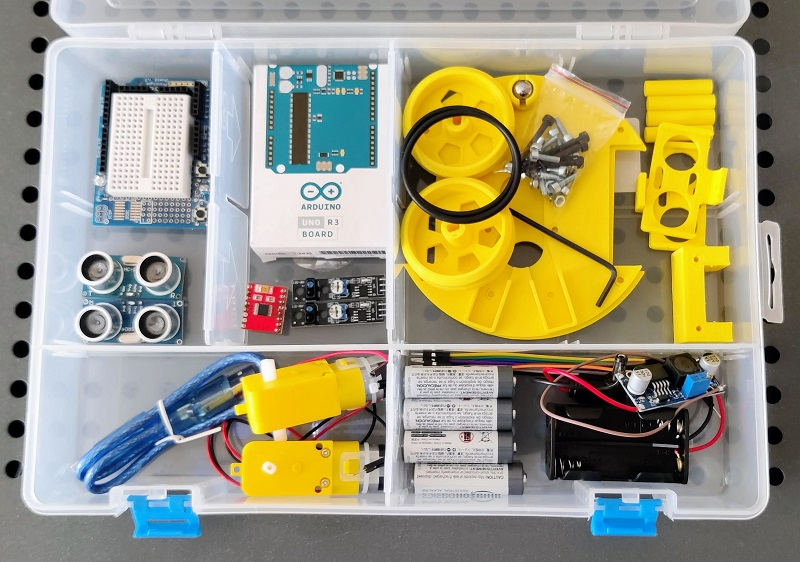
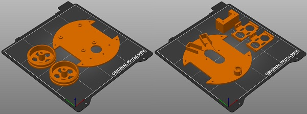

Un Kit Sapoconcho
Un kit de Sapoconcho es un paquete con todas las piezas necesarias para montar un Sapoconcho. Para hacerte uno necesitarás una serie de materiales que detallaremos a continuación:

Piezas imprimibles
El chasis de Sapoconcho consta de las siguientes piezas:
- Bases superior e inferior.
- Soporte de motores (1 unidad).
- Pilares de unión (o separación) de las dos bases (4 unidades). Pueden usarse en su lugar separadores de circuitos de 30mm.
- Ruedas (2 unidades).
- Soporte de sensores de ultrasonidos (1 ó 2 unidades).
En una impresora típica de 200x200mm se pueden imprimir todas las piezas en dos tandas.

Todas las piezas están en este repositorio de Github. Ahí puedes encontrar los archivos originales de OpenSCAD para modificarlos a tu gusto o los STL para imprimir directamente.
Listado de materiales (BOM)
- Arduino UNO o compatible.
- Protoshield para Arduino UNO.
- Driver de motores TB6612 o DRV8833.
- Dos motores amarillos. Sabemos que es un término muy genérico, pero si estás metido un poco en el mundo maker/DIY o haces una búsqueda rápida en tu plataforma favorita verás a qué nos referimos. Es un tipo de motor de corriente continua muy usado en todo tipo de proyectos y kits, muy fácil de conseguir y muy económico. No necesitamos las ruedas que traen a veces.
- Gomas de fontanería para las ruedas (2ud). Medida 45×3 mm.
- Bola de acero de 10 mm.
- Sensores ultrasónicos HC-SR04 (1 ó 2 ud).
- Sensores de líneas por infrarrojos (2 ud).
- Portapilas para montar 4 pilas AA (dos encima y dos debajo).
- Elevador de tensión DC-DC (step-up, con los integrados LM2587/XL6009).
- Clavija de alimentación para Arduino UNO (5.5×2.1 mm).
- Tornillos M3 (12 ud M3x10, 4 ud M3x30, 4d M3x6).
- Tuercas M3 (4 ud).
- Cables Dupont M-H de 20mm y de 10mm.
- Cable USB-A a USB-B
- Cables de tres colores (rojo, negro y otro) para breadboard.
Por si os es de utilidad, os dejamos una lista de la compra en Amazon.